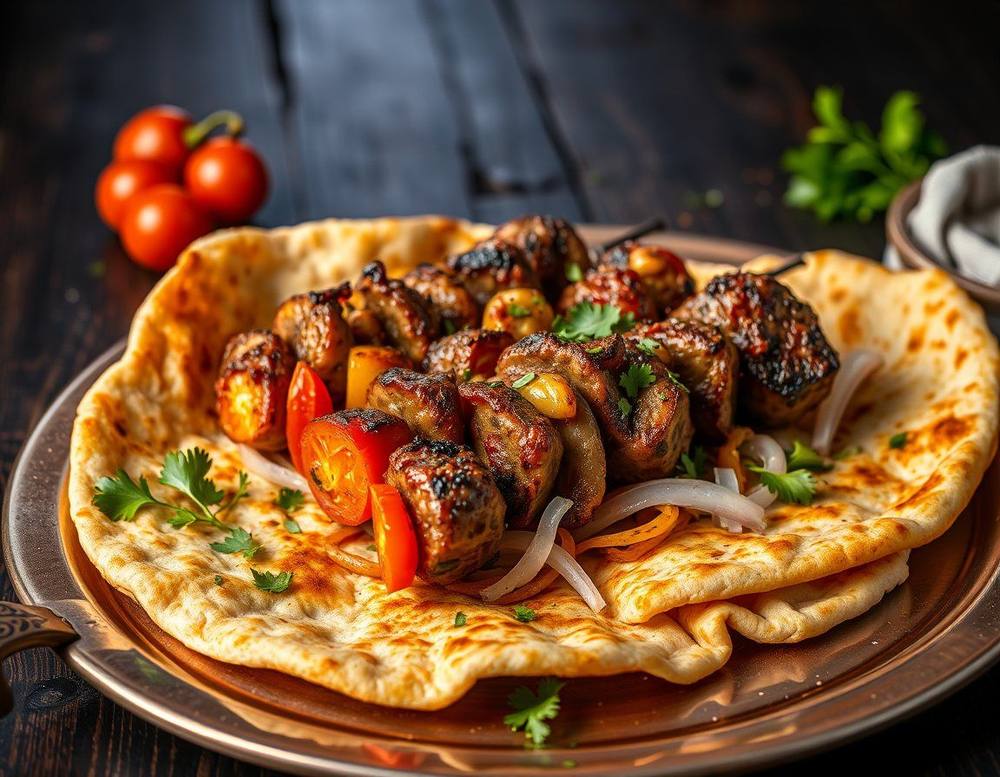
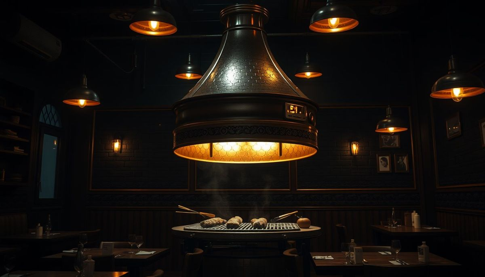

1945'ten günümüze · Kaleiçi, Denizli
Denizli kebabı, ustasının elinden.
Kocabaylar Kebap Salonu, Bayramyeri Kaleiçi'nde her gün 11:30-18:00 arası açık. Kalabalık sofralar için masanızı önceden ayırtın.

Temsilî görsel
Hikâyemiz
1945'ten bugüne.
Bu bölümde salonun hikâyesi sizin anlattığınız gibi yer alır: kuruluş, ustalar, Kaleiçi'ndeki yeriniz. Aşağıdaki çizgi örnektir, tarihleri sizinle birlikte doldururuz.
1945Kuruluş. İlk yılların hikâyesi buraya.
BugünHüsamettin Usta, Bayramyeri Kaleiçi'nde.
YarınSiz anlatın, buraya yazalım.
2.700+
Google Haritalar'da 2.700'ü aşkın değerlendirme. Sayfada bu değerlendirmelere tek dokunuşla ulaşılır; misafirin yorumuna verilen kısa bir teşekkür de yeni gelecek misafire "burada bizi dinliyorlar" der.
Yorumları gör
Rezervasyon
Masanızı ayırtın.
Gün, saat ve kişi sayısını seçin; rezervasyon notu hazır olur. Aradığınızda okumanız yeterli.
Telefon0258 241 40 60
AdresBayramyeri, Kaleiçi 486. Sk., Merkezefendi / Denizli
Yol tarifi
Yol tarifi
Instagram ve video@kebapcihusamettinusta · YouTube videomuz